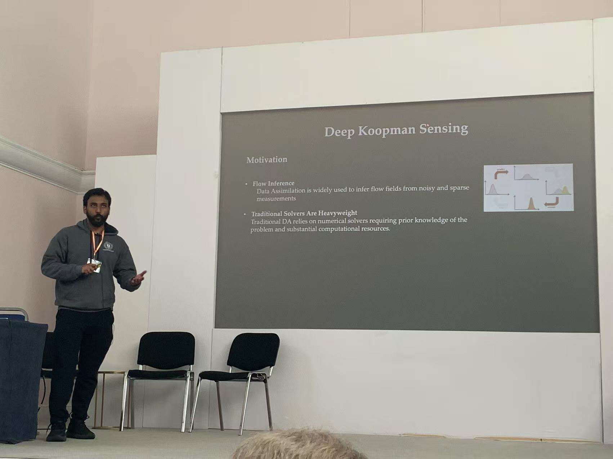
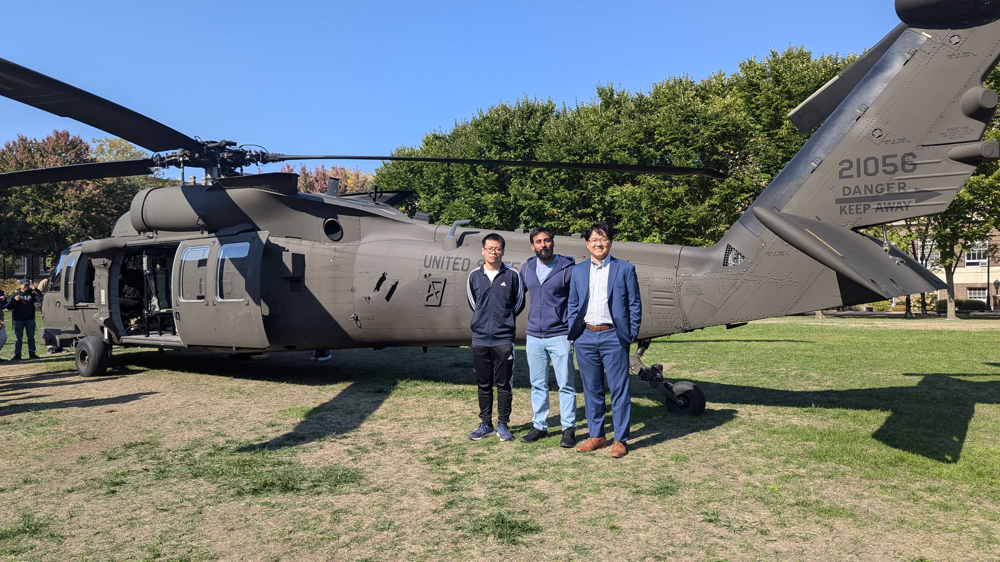

Ph.D. students
- Nithin Somasekharan
- Shahriar Akbar Sakib
- Ling Yue (Computer Science)
- Rabi Pathak
- Pochinapeddi Sai Bhargav
- Raymond Chien
Undergraduates
- Youssef Hassan (Computer Science)
- Xingyu Xie
Former Masters research Students
- Weichao Li 2025, Next Position: AI algorithm Engineer
- Izzy Formica 2025, Next Position: UMN AEM Ph.D. student
- Sandesh Dhakal 2024, Next Position: Data scientist and Machine Learning Engineer
- Jake Herman 2024, Next Position: Process Engineer

2025-4, Nithin presented his work in London.

2024-10, Weichao, Nithin and myself.